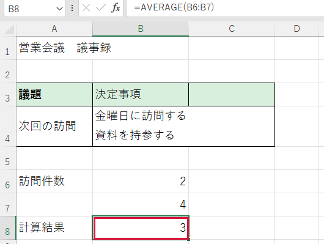

平均を計算したい

訪問件数など、数値が入力された欄の平均を求めます。
操作手順
- 結果を表示する空欄をクリックします。例ではB8（B列の8行目）です。
- 半角で =AVERAGE(B6:B7) と入力します。AVERAGEは平均を求める命令、B6:B7はB6からB7までです。
- Enter を押します。平均値が表示されます。
できたか確認
B6が2、B7が4なら、平均は3です。
注意点
空欄は計算の対象外ですが、0を入力した欄は対象です。

訪問件数など、数値が入力された欄の平均を求めます。
B6が2、B7が4なら、平均は3です。
空欄は計算の対象外ですが、0を入力した欄は対象です。